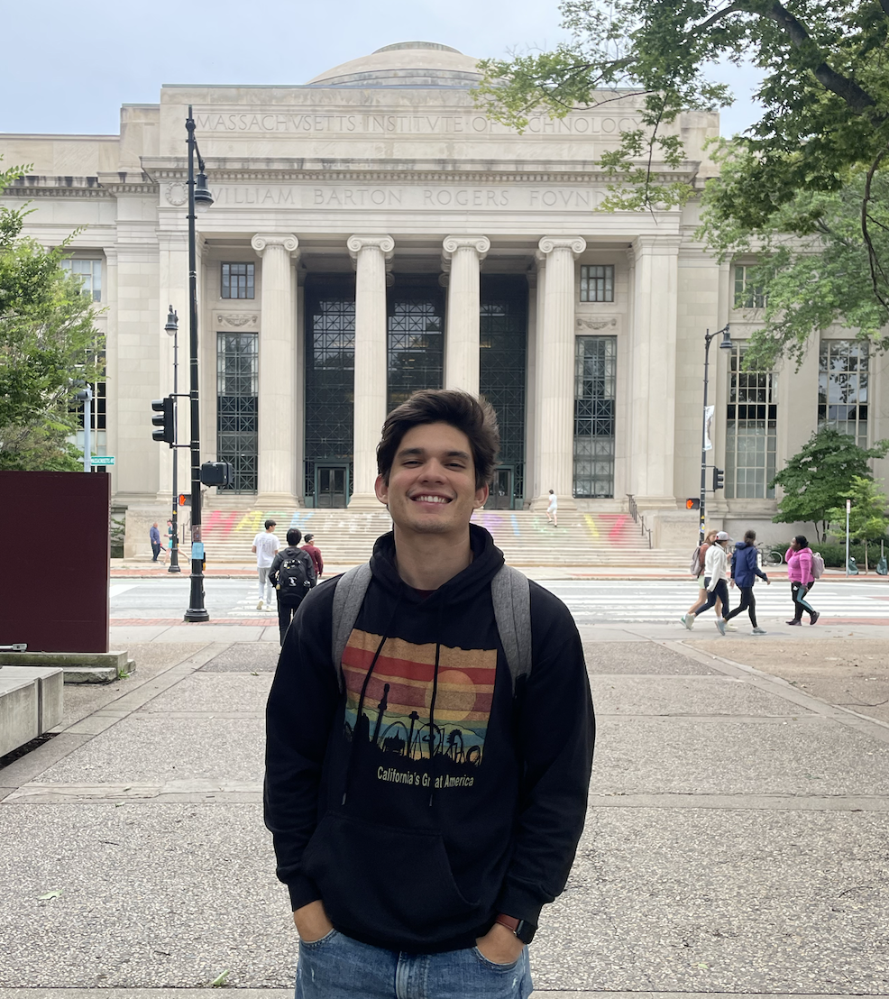

Hey! I am a second-year Computational Science and Engineering master's student at Harvard University, working in Reinforcement Learning with Verifiable Rewards (RLVR), advised by Sham Kakade. I completed my undergraduate degree in Computer Engineering at the Federal University of Paraíba (UFPB) in Brazil. At Harvard, I’m a Teaching Fellow for AC215 (MLOps & LLMOps) and a Machine Learning Researcher at the Kempner Institute, focusing on Reinforcement Learning with Verifiable Rewards (RLVR). Previously, I interned twice at Google (YouTube and Search) and twice at Meta (AI for AR and Ads).
I like running, playing football (the one and only ⚽), surfing, and reading in my spare time.
You can get in touch with me at itamardprf@gmail.com, visit my GitHub, or connect with me on LinkedIn. You can learn more about my career on LinkedIn and in my resume (which may be outdated).
The paper presents an in-depth analysis and comparison of Evolution Strategies (ES) and gradient-based Reinforcement Learning methods, such as GRPO, for fine-tuning large language models. The main goal is to demonstrate that ES can serve as a scalable and sample-efficient alternative for performance optimization and safety alignment, achieving competitive rewards while reducing reward hacking and enabling more robust, context-aware alignment outcomes. Read the paper →
An AI safety experiment analyzing evaluation hacking in language-model agents, combining controlled task design, behavioral analysis under pressure, and systematic testing across models. Read the write-up for experimental setup, findings, and implications for alignment. (Context: CS 2881r Seminar)
AC215 Best of Show — 2024
An AI-powered running coach on WhatsApp, combining RAG, fine-tuned LLMs, vector search, and a GKE deployment. Read the write-up for system design and results.